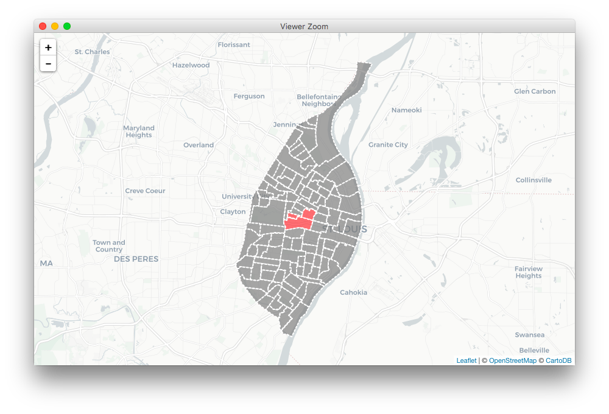

Overview
This package implements a process for converting qualitative GIS data from an exercise where respondents are asked to identify salient locations on a map. This article focuses primarily on the use of the software to digitize these data.
Getting Started with R
If you are new to R, welcome! You will need to download R. You are also strongly encouraged to download and use RStudio. macOS users should also download and install XQuartz.
Dependencies
You should check the sf package website for the latest details on installing dependencies for that package. Instructions vary significantly by operating system. For best results, have sf installed before you install qualmap. Other dependencies, like dplyr and leaflet, will be installed automatically with qualmap if they are not already present.
Installation
Once you have those installed, you can install qualmap using the remotes package:
# install.packages("remotes")
remotes::install_github("slu-openGIS/qualmap")
Basics
qualmap is built around a number of fundamental principles. The primary data objects created by qm_combine() are long data rather than wide. This is done to facilitate easy, consistent data management. The package also implements simple features objects using the sf package. This provides a modern interface for working with spatial data in R.
Core Verbs
qualmap implements six core verbs for working with mental map data:
-
qm_define() - create a vector of feature id numbers that constitute a single “cluster”
-
qm_validate() - check feature id numbers against a reference data set to ensure that the values are valid
-
qm_preview() - plot cluster on an interactive map to ensure the feature ids have been entered correctly (the preview should match the map used as a data collection instrument)
-
qm_create() - create a single cluster object once the data have been validated and visually inspected
-
qm_combine() - combine multiple cluster objects together into a single tibble data object
-
qm_summarize() - summarize the combined data object based on a single qualitative construct to prepare for mapping
The order that these functions are listed here is the approximate order in which they should be utilized. Data should be defined, validated and previewed, and then cluster objects should be created, combined, and summarized.
Main Arguments
All of the main functions except qm_define() and qm_combine() rely on two key arguments:
-
ref - a reference object. This should be an sf object that contains a master list of features that appear in your study. This could a sf object representing all census tracts in a city or county, for example, or a tessellated grid covering the extent of a city.
-
key - the name of geographic id variable in the ref object to match input values to. This could be a FIPS code, the GEOID variable in most census data, or the OBJECTID of a tessellated grid. Values entered into qm_define() should key values.
Additionally, a number of the initial functions have a third essential argument:
-
value - the name of the cluster created using qm_define()
Data Preparation
To begin, you will need a simple features object containing the polygons you will be matching respondents’ data to. Census geography polygons can be downloaded via tigris, and other polygon shapefiles can be read into R using the sf package.
Here is an example of preparing data downloaded via tigris:
We download the census tract data for St. Louis, which come in sp format, using the tracts() function from tigris. We then use the sf package’s st_as_sf() function to convert these data to a simple features object and convert the TRACTCE variable to numeric format.
If you want to use your own base data instead, you can use the st_read() function from sf to bring them into R.
Data Entry
Once we have a reference data set constructed, we can begin entering the tract numbers that constitute a single circle on the map or “cluster”. We use the qm_define() function to input these id numbers into a vector:
cluster1 <- qm_define(118600, 119101, 119300)
We can then use the qm_validate() function to check each value in the vector and ensure that these values all match the key variable in the reference data:
> qm_validate(ref = stLouis, key = TRACTCE, value = cluster1)
[1] TRUE
If qm_validate() returns a TRUE value, all data are matches. If it returns FALSE, at least one of the input values does not match any of the key variable values. In this case, our key is the TRACTCE variable in the sf object we created earlier.
Once the data are validated, we can preview them interactively using qm_preview(), which will show the features identified in the given vector in red on the map:
qm_preview(ref = stLouis, key = TRACTCE, value = cluster1)

Create Cluster Object
A cluster object is tibble data frame that is “tidy” - each feature in the reference data is a row. Cluster objects also contain metadata about the cluster itself: the respondent’s identification number from the study, a cluster identification number, and a category that describes what the cluster represents. Clusters are created using qm_create():
> cluster1_obj <- qm_create(ref = stLouis, key = TRACTCE, value = cluster1, rid = 1, cid = 1, category = "positive")
> cluster1_obj
# A tibble: 3 x 5
RID CID CAT TRACTCE COUNT
* <int> <int> <chr> <dbl> <dbl>
1 1 1 positive 119300 1.00
2 1 1 positive 118600 1.00
3 1 1 positive 119101 1.00
Combine and Summarize Multiple Clusters
Once several cluster objects have been created, they can be combined using qm_combine() to produce a tidy tibble formatted data object:
> clusters <- qm_combine(cluster1_obj, cluster2_obj, cluster3_obj)
> clusters
# A tibble: 9 x 5
RID CID CAT TRACTCE COUNT
<int> <int> <chr> <dbl> <dbl>
1 1 1 positive 119300 1.00
2 1 1 positive 118600 1.00
3 1 1 positive 119101 1.00
4 1 2 positive 119300 1.00
5 1 2 positive 121200 1.00
6 1 2 positive 121100 1.00
7 1 3 negative 119300 1.00
8 1 3 negative 118600 1.00
9 1 3 negative 119101 1.00Since the same census tract appears in multiple rows as part of different clusters, we need to summarize these data before we can map them. Part of qualmap’s opinionated approach revolves around clusters representing only one construct. When we summarize, therefore, we also subset our data so that they represent only one phenomenon. In the above example, there are both “positive” and “negative” clusters. We can use qm_summarize() to extract only the “positive” clusters and then summarize them so that we have one row per census tract:
> pos <- qm_summarize(ref = stLouis, key = TRACTCE, clusters = clusters,
+ category = "positive", geometry = TRUE, use.na = FALSE)
> pos
Simple feature collection with 106 features and 7 fields
geometry type: POLYGON
dimension: XY
bbox: xmin: -90.32052 ymin: 38.53185 xmax: -90.16657 ymax: 38.77443
epsg (SRID): 4269
proj4string: +proj=longlat +ellps=GRS80 +towgs84=0,0,0,0,0,0,0 +no_defs
First 10 features:
STATEFP COUNTYFP TRACTCE GEOID NAME NAMELSAD positive geometry
1 29 510 112100 29510112100 1121 Census Tract 1121 0 POLYGON ((-90.30445 38.6328...
2 29 510 116500 29510116500 1165 Census Tract 1165 0 POLYGON ((-90.24302 38.5975...
3 29 510 110300 29510110300 1103 Census Tract 1103 0 POLYGON ((-90.24032 38.6643...
4 29 510 103700 29510103700 1037 Census Tract 1037 0 POLYGON ((-90.29877 38.6028...
5 29 510 103800 29510103800 1038 Census Tract 1038 0 POLYGON ((-90.32052 38.5941...
6 29 510 104500 29510104500 1045 Census Tract 1045 0 POLYGON ((-90.29432 38.6209...
7 29 510 106100 29510106100 1061 Census Tract 1061 0 POLYGON ((-90.29005 38.6705...
8 29 510 105500 29510105500 1055 Census Tract 1055 0 POLYGON ((-90.28601 38.6589...
9 29 510 105200 29510105200 1052 Census Tract 1052 0 POLYGON ((-90.29481 38.6473...
10 29 510 105300 29510105300 1053 Census Tract 1053 0 POLYGON ((-90.29705 38.6617...
The qm_summarize() function has an options to return NA values instead of 0 values for features not included in any clusters (when use.na = TRUE), and can return a non-sf tibble of valid features instead of the sf object (when geometry = FALSE).
Mapping Summarized Data
Finally, we can use the geom_sf() geom from ggplot2 to map our summarized data, highlighting areas most discussed as being “positive” parts of St. Louis in our hypothetical study:

Since qualmap output are sf objects, they will work with any of the spatial packages that also support sf.